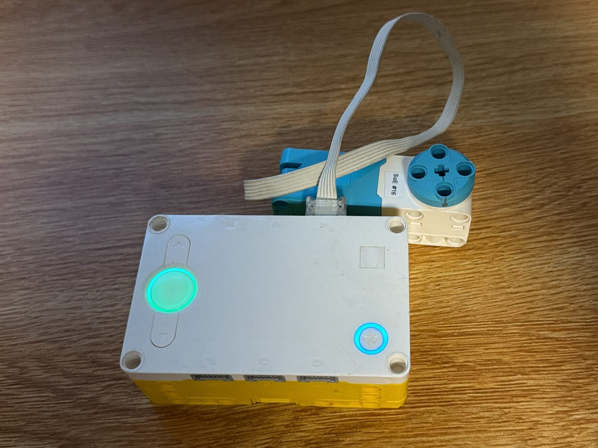
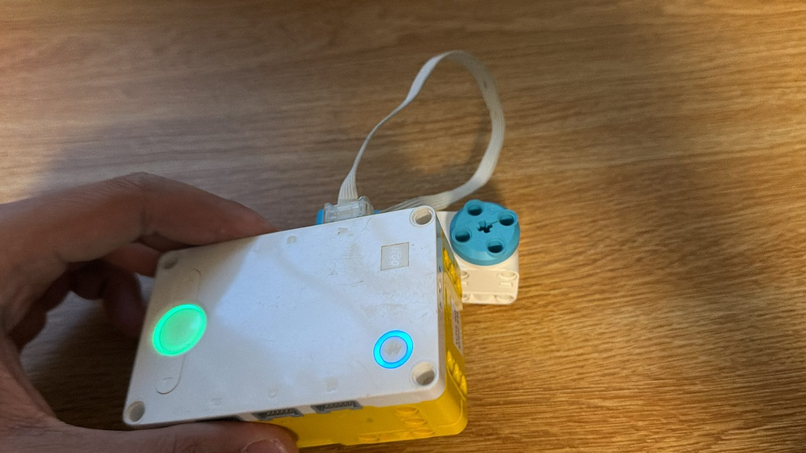

For this in-class activity, we used AI to help write code that reads an input sensor and uses it to control a motor (output), as practice for Project 8: Astronaut Tools. I chose the SPIKE Prime hub’s built-in IMU (motion sensor) as my input and a motor on port A as my output.
When the hub lies flat (parallel to the ground), the motor stays off. When I tilt the hub forward, backward, or to the side, the motor turns on, and the further it tilts, the faster it spins. Every 20 ms, the program reads the hub’s pitch and roll and adds them together (ignoring direction) to get the total tilt. Yaw is ignored. A tilt of 2° or less counts as level, so small sensor fluctuations don’t switch the motor on. Above that, the speed increases with the tilt until it reaches 650 degrees per second at 30°. So the tilt controls both on/off and speed. The motor always spins forward.

I wrote the program with help from ChatGPT. My first prompt described this behavior: motor off when the hub is level, faster the further it tilts, and the motor on port A. Then I asked it to make the motor run even faster as the hub tilts. ChatGPT lowered the tilt needed for full speed from 45° to 30° and raised the maximum speed to 650 degrees per second.
When I tested the final code, the motor stayed off while the hub was flat and sped up as I tilted the hub further.
# Setup: the motor is connected to port A.
from hub import port, motion_sensor
import runloop
import motor
# Treat tilt smaller than this as level, in degrees.
LEVEL_TOLERANCE = 2
# Reach maximum speed at a smaller tilt angle.
MAX_TILT_DEGREES = 30
# Maximum motor speed in degrees per second.
MAX_SPEED = 650
async def main():
# Keep checking the hub's tilt while the program runs.
while True:
# Read pitch and roll. The sensor reports decidegrees,
# so divide by 10 to get degrees. The tuple is (yaw, pitch, roll).
angles = motion_sensor.tilt_angles()
pitch_degrees = angles[1] / 10
roll_degrees = angles[2] / 10
# Combine pitch and roll to estimate how far the hub is tilted.
tilt_amount = abs(pitch_degrees) + abs(roll_degrees)
# Keep the motor off when the hub is approximately level.
if tilt_amount <= LEVEL_TOLERANCE:
motor.stop(port.A)
else:
# Increase speed with tilt, stopping the calculation at MAX_SPEED.
speed = int(tilt_amount * MAX_SPEED / MAX_TILT_DEGREES)
speed = min(speed, MAX_SPEED)
# Run the motor forward at the calculated speed.
motor.run(port.A, speed)
# Pause briefly before checking the tilt again.
await runloop.sleep_ms(20)
runloop.run(main())